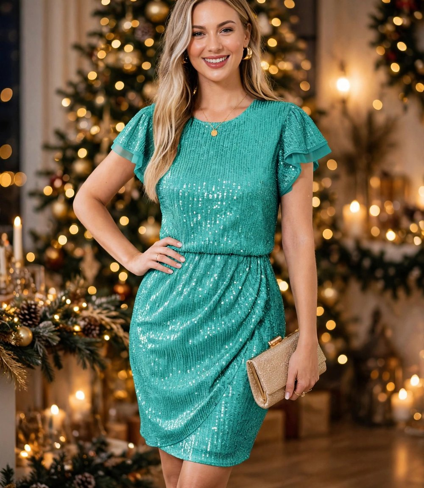
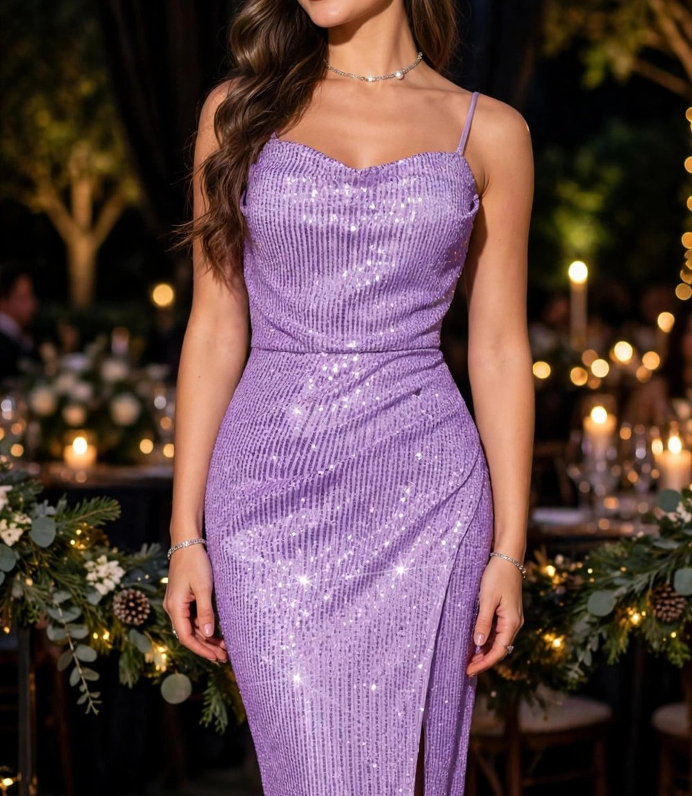
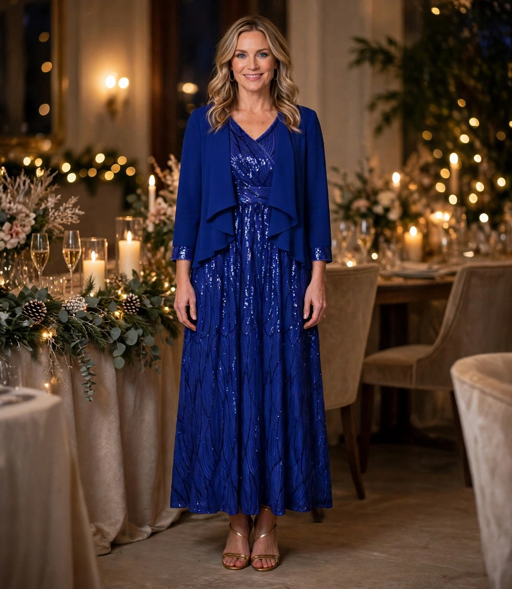
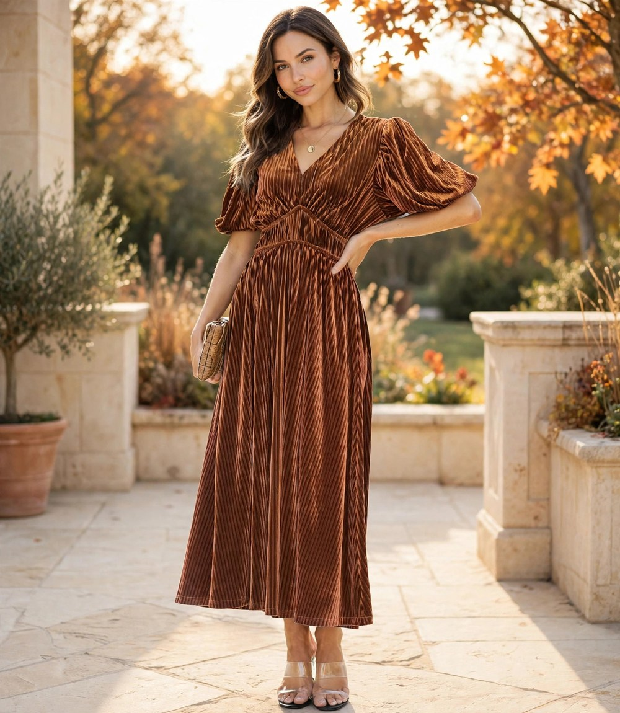
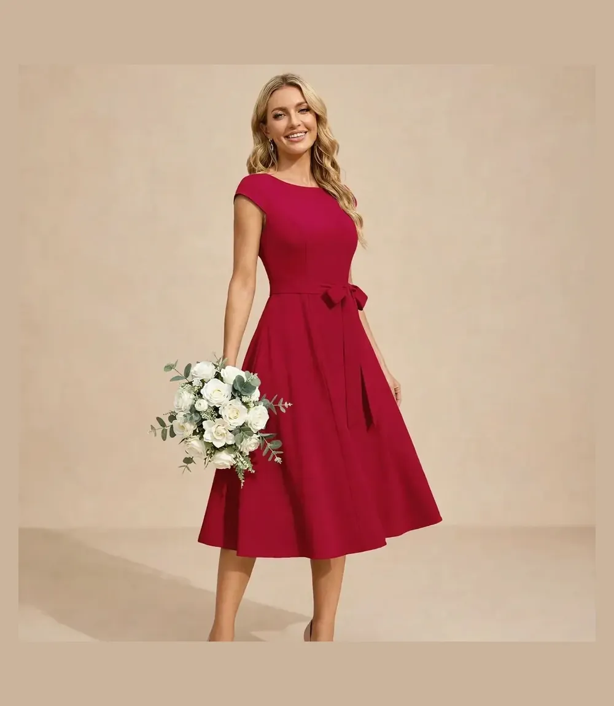
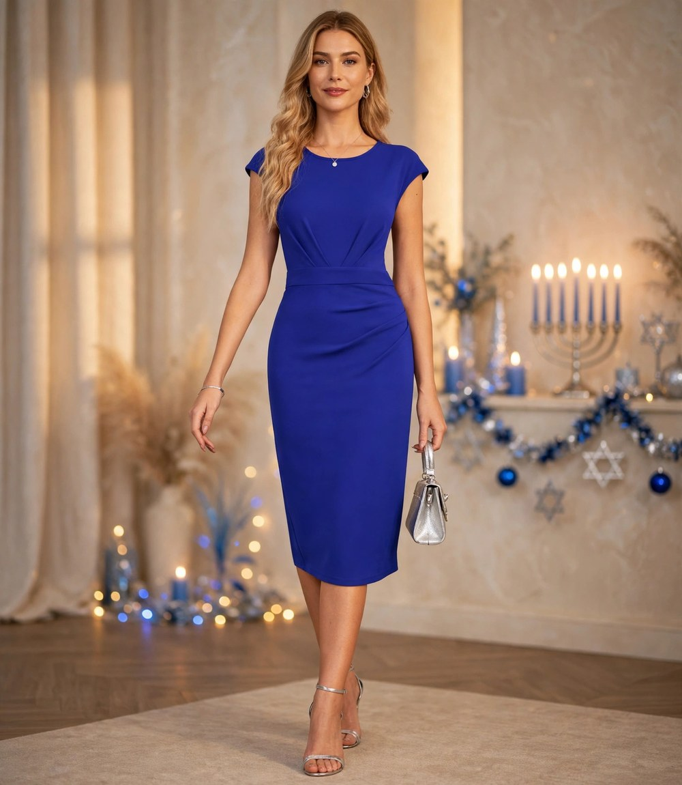
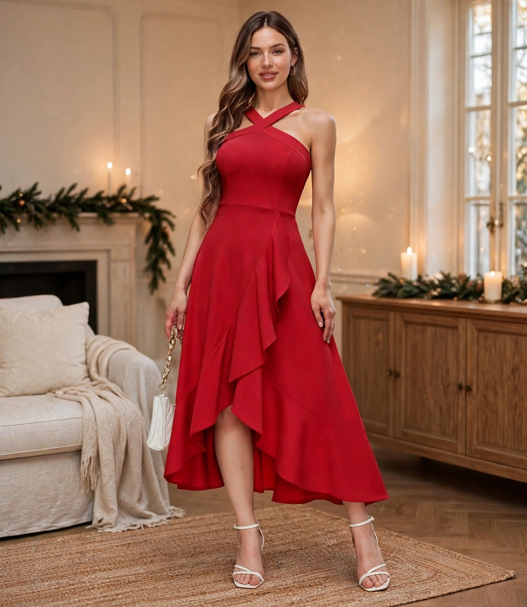
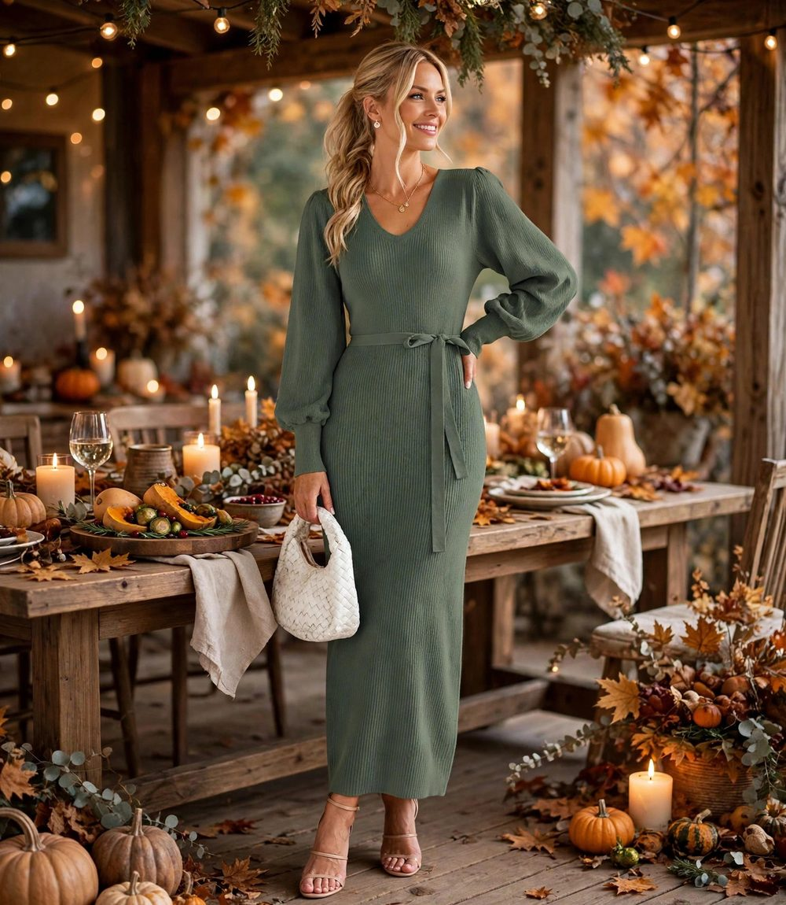

Ten Christmas Party Dresses That Do the Sparkling for You
One dress has to do a lot in December: the office party, the family do, Christmas Eve drinks, New Year’s Eve at midnight — and it has to do it without costing designer money. This guide is ten Christmas party dresses from the LOOKIQ catalogue, in the three fabrics the season actually runs on — sequin, velvet and a classic cocktail cut — every one of them under $60, every rating shown honestly, including the 4.0s.
Every price below is a LOOKIQ catalog price, checked November 2026 — confirm the live price on the product page before you buy. The full ten come to $458.14; the cheapest dress is $26.99 and the priciest is $59.99. For the whole season organised by date — Thanksgiving through New Year’s Eve — see our Holiday Event Shop.
As an Amazon Associate, LOOKIQ earns from qualifying purchases. Read our affiliate disclosure.
The Short Answer
If you buy one dress from this guide, buy the GRACE KARIN Sequin Cocktail Party Dress in Lake Green ($53.99, 4.0★, 702 ratings) — all-over sequins, fully lined so the sparkle never scratches, with flutter sleeves and a wrap hem, and the listing names Christmas parties and New Year’s Eve among its occasions. The guide at a glance:
- The Sequin Showstopper — GRACE KARIN Sequin Cocktail Party Dress, Lake Green: $53.99 · 4.0★ · 702 ratings
- The Romantic Sequin Midi — BeryLove Sequin Midi Bodycon, Lavender: $42.55 · 4.0★ · 283 ratings
- The Rose-Gold Classic — GRACE KARIN Cap Sleeve Sequin Midi, Rose Gold: $59.99 · 4.0★ · 685 ratings
- The Velvet That Looks Expensive — GRACE KARIN Velvet Cowl Neck Dress, Wine Red: $39.97 · 4.3★ · 793 ratings
- The Two-Piece With the Jacket — GRACE KARIN Two Piece Sequin Dress, Blue: $46.99 · 4.1★ · 409 ratings
- The Velvet Maxi With Pockets — Sissyaki Velvet Maxi Dress, Caramel: $59.99 · 4.3★ · 603 ratings
- The Most-Reviewed Classic — DRESSTELLS Vintage A-Line Cocktail Dress: $43.99 · 4.2★ · 23,310 ratings
- The Office-Party Safe Bet — GRACE KARIN Cap Sleeve Bodycon Midi, Royal Blue: $43.69 · 4.3★ · 486 ratings
- The Red One — Bbonlinedress Halter Cocktail Hi-Lo Dress, Red: $39.99 · 4.3★ · 1,633 ratings
- The Cosy Budget Pick — PRETTYGARDEN Knit Sweater Maxi Dress, Army Green: $26.99 · 4.4★ · 842 ratings
The Guide at a Glance
| Dress | Style | Rating | Price | Best For |
|---|---|---|---|---|
| GRACE KARIN Sequin Cocktail Party Dress, Lake Green | Sequin cocktail | 4.0★ | $53.99 | The sequin showstopper |
| BeryLove Sequin Midi Bodycon, Lavender | Sequin midi | 4.0★ | $42.55 | The romantic sequin midi |
| GRACE KARIN Cap Sleeve Sequin Midi, Rose Gold | Sequin midi | 4.0★ | $59.99 | The rose-gold classic |
| GRACE KARIN Velvet Cowl Neck Dress, Wine Red | Velvet bodycon | 4.3★ | $39.97 | The velvet that looks expensive |
| GRACE KARIN Two Piece Sequin Dress, Blue | Sequin + jacket | 4.1★ | $46.99 | The two-piece with the jacket |
| Sissyaki Velvet Maxi Dress, Caramel | Velvet maxi | 4.3★ | $59.99 | The velvet maxi with pockets |
| DRESSTELLS Vintage A-Line Cocktail Dress | Classic cocktail | 4.2★ | $43.99 | The most-reviewed classic |
| GRACE KARIN Cap Sleeve Bodycon Midi, Royal Blue | Bodycon midi | 4.3★ | $43.69 | The office-party safe bet |
| Bbonlinedress Halter Cocktail Hi-Lo Dress, Red | Cocktail, hi-lo | 4.3★ | $39.99 | The red one |
| PRETTYGARDEN Knit Sweater Maxi Dress, Army Green | Knit maxi | 4.4★ | $26.99 | The cosy budget pick |
The Quick List
- GRACE KARIN Sequin Cocktail Party Dress, Lake Green — the sequin showstopper$53.99
- BeryLove Sequin Midi Bodycon, Lavender — the romantic sequin midi$42.55
- GRACE KARIN Cap Sleeve Sequin Midi, Rose Gold — the rose-gold classic$59.99
- GRACE KARIN Velvet Cowl Neck Dress, Wine Red — the velvet that looks expensive$39.97
- GRACE KARIN Two Piece Sequin Dress, Blue — the two-piece with the jacket$46.99
- Sissyaki Velvet Maxi Dress, Caramel — the velvet maxi with pockets$59.99
- DRESSTELLS Vintage A-Line Cocktail Dress — the most-reviewed classic$43.99
- GRACE KARIN Cap Sleeve Bodycon Midi, Royal Blue — the office-party safe bet$43.69
- Bbonlinedress Halter Cocktail Hi-Lo Dress, Red — the red one$39.99
- PRETTYGARDEN Knit Sweater Maxi Dress, Army Green — the cosy budget pick$26.99
Sequin: Four Dresses That Do the Sparkling
Sequin is the Christmas party default for a reason: in party light, nothing else photographs like it. These four are all fully lined, all stretch, and all named for Christmas parties or New Year’s Eve on their own listings. The four together total $203.52.

1. GRACE KARIN Sequin Cocktail Party Dress, Lake Green — The Sequin Showstopper
All-over sequins in deep lake green, with flutter cap sleeves, a crew neckline and a button keyhole back — the dress the listing itself names for Christmas parties and New Year’s Eve. The fully lined shell is the detail that matters: the sparkle never feels scratchy, so it stays comfortable from the first drink to midnight.
Why we picked it: it is the most party-ready dress in the catalogue — the green reads festive without reading costume, and the elastic waist and wrap hem let it move when you dance. See the full review or check the price on Amazon.
- Fully lined sequin shell — no scratch, all night
- Elastic waist and wrap hem move with you
- Lake green reads festive, not costume
- 4.0 stars — the lowest rating band in this guide; check recent reviews for fit notes before ordering

2. BeryLove Sequin Midi Bodycon Holiday Party Dress, Lavender — The Romantic Sequin Midi
Lavender sequins on a cowl-neck bodycon midi with front ruching and a side slit — a romantic holiday party dress that reads formal, not flashy, at under $45. The sequins are sewn in so they stay put while you dance, and the fabric is skin-friendly and stretchy.
Why we picked it: lavender is the softest sequin in this guide, and the midi length keeps it formal-occasion appropriate where a shorter sequin dress would not. See the full review or check the price on Amazon.
- Cowl neckline and ruching read romantic, not flashy
- Sequins sewn in — they stay put while you dance
- Midi length suits formal occasions
- 283 ratings — a smaller review base than the guide’s classics; 4.0 stars, so read the recent reviews first
3. GRACE KARIN Cap Sleeve Sequin Midi Dress, Rose Gold — The Rose-Gold Classic
All-over rose-gold sequins on a fully lined midi with plain cap sleeves, a crew neckline and a keyhole back — the listing names Christmas parties and New Year’s Eve among its occasions. The elastic waist and hips-wrapped silhouette flatter without restricting, and the plain sleeves keep the sparkle from tipping into costume.
Why we picked it: rose gold is the season’s most flattering sequin tone, and this is the classic cut of the four — the one that works for the office party and the midnight toast alike. See the full review or check the price on Amazon.
- Rose gold flatters warm and cool skin tones alike
- Fully lined, with an elastic waist for all-night comfort
- One dress for Christmas, New Year’s Eve, weddings and birthdays
- $59.99 — tied for the guide’s priciest pick, with no was-price saving on the listing

4. GRACE KARIN Two Piece Sequin Dress With Jacket, Blue — The Two-Piece With the Jacket
Royal-blue sequins with a matching chiffon jacket — the two-piece holiday dress that covers Christmas parties and New Year’s Eve in one elegant set. The sleeveless V-neck A-line dress hits at the ankle with a hidden back zip, and the open-front chiffon shrug with a sequin sleeve cuff adds the coverage December actually needs.
Why we picked it: it is the only pick here that solves the cold-venue problem by itself — jacket on for the arrival and the photos, jacket off for dancing. See the full review or check the price on Amazon.
- Matching jacket solves cold venues — no separate cover-up to buy
- Ankle-length A-line reads elegant, not clubby
- Two pieces, one price: $46.99
- Ankle length plus a jacket is a lot of dress — petite frames should check the listing’s measurements first
Velvet: The Softest Way to Look Expensive
Velvet does what sequin cannot: it photographs rich in low light, feels warm on a cold night, and never sheds glitter on the coat you wear home. These two — wine red and caramel — total $99.96.
5. GRACE KARIN Velvet Cowl Neck Dress, Wine Red — The Velvet That Looks Expensive
Wine-red velvet, a draped cowl neckline and a ruched mermaid hem — the holiday party dress that looks far more expensive than $39.97. The vintage cowl neckline is sleeveless with a zipper closure, the fitted bodycon shape follows your curves, and the stretchy velvet has a rich sheen with a beautiful drape that reads expensive in party light.
Why we picked it: it is the best value in this guide — 4.3 stars across 793 ratings, wine red is the season’s colour, and the listing names holiday parties and formal dinners among its occasions. See the full review or check the price on Amazon.
- Wine-red velvet with a rich sheen — reads expensive at $39.97
- 4.3 stars across 793 ratings
- One dress for weddings, cocktail parties, date nights and holiday parties
- Sleeveless cowl neck — plan a wrap or jacket for the journey there

6. Sissyaki Velvet Maxi Dress, Caramel — The Velvet Maxi With Pockets
Caramel ribbed velvet, a V-neck twist front and a flowing pleated A-line skirt — the Thanksgiving-to-New-Year’s-Eve maxi with pockets. The short puff sleeves highlight the collarbone and pair with any necklace, the ruched waist and high-waist A-line skirt hold the shape, and the two deep side pockets hold a phone, keys or lipstick discreetly.
Why we picked it: a maxi that works for corporate holiday parties, Thanksgiving dinners and New Year’s Eve in one, with an easy pull-on closure — no stiff zippers to fight in the bathroom at midnight. See the full review or check the price on Amazon.
- Two deep pockets — the only pocketed dress in this guide
- Pull-on closure, no stiff zippers
- Warm ribbed velvet for winter weddings and holiday parties
- $59.99 — tied for the guide’s priciest pick, and caramel is a warm tone that suits warm wardrobes best
Classic & Cosy: The Rest of the Party
Not every party wants sparkle. The classic cocktail dress, the office-safe bodycon, the red halter and the cosy knit maxi cover the parties where sequin would be too much — and the four together total $154.66.

7. DRESSTELLS Vintage A-Line Cocktail Dress — The Most-Reviewed Classic
A flattering 1950s tea-length vintage A-line cocktail dress with delicate cap sleeves and a pleated bodice — the ultimate wedding-guest staple, and the most-reviewed dress in this guide by a distance: 23,310 ratings at 4.2 stars. The breathable high-density stretch blend (94% nylon, 6% spandex) keeps the swing skirt comfortable all evening.
Why we picked it: when 23,310 buyers agree, the risk disappears — this is the safe classic for any party where you are unsure of the dress code, in standard US sizing from XS to 3XL and over 40 seasonal colours on the listing. See the full review or check the price on Amazon.
- 23,310 ratings — more buyer proof than the other eight picks combined
- Standard US sizing XS–3XL, the widest range in this guide
- $16.00 off the $59.99 list price
- A 1950s vintage cut — the swing skirt reads retro, not minimal, so it suits a classic party better than a modern one

8. GRACE KARIN Cap Sleeve Bodycon Midi Dress, Royal Blue — The Office-Party Safe Bet
A royal-blue cap-sleeve bodycon midi with a ruched waist and hidden back zip — polished enough for Hanukkah dinners, the office and formal gatherings, in the festival’s own blue. The 95% polyester, 5% elastane blend has a soft lining, so it stays comfortable all day, and the centre back slit keeps the midi length easy to move in.
Why we picked it: the office party is the hardest dress code in December — festive but not flashy, polished but not corporate — and this is the dress built for exactly that line. See the full review or check the price on Amazon.
- Royal blue suits office, Hanukkah and formal parties alike
- Ruched waist and back slit keep the bodycon cut comfortable
- Sizes S–2XL with a seller size chart for accurate fit
- No sequin, no velvet — if the party is a sparkle party, the lake-green or rose-gold sequin dresses are the better call

9. Bbonlinedress Halter Cocktail Hi-Lo Dress, Red — The Red One
A red halter-neck cocktail dress with a ruffled hi-lo hem — the $39.99 party dress that turns a December night into an entrance. The hi-lo hemline is shorter in front and longer at the back, made to move, and the ruffled hem adds a playful, feminine finish to a classic cocktail shape.
Why we picked it: red is the colour of Christmas itself, and this is the only true red dress in the guide — 4.3 stars across 1,633 ratings, made for cocktail parties, proms, weddings, dates, homecoming and holiday evenings. See the full review or check the price on Amazon.
- Red is the Christmas colour — the only true red in this guide
- Hi-lo hem moves with you on the dance floor
- 4.3 stars across 1,633 ratings, $6.55 off the list price
- Halter neckline shows the shoulders — plan a wrap for the journey there

10. PRETTYGARDEN Knit Sweater Maxi Dress, Army Green — The Cosy Budget Pick
A ribbed-knit maxi sweater dress in army green with lantern sleeves and a tie waist — cosy enough for Thanksgiving dinner, polished enough for the family photo. The soft, stretchy knit feels comfortable against the skin all day, the flattering V-neckline and ribbed cuffs keep it looking intentional, and the self-tie belt defines the waist over the maxi bodycon length.
Why we picked it: at $26.99 it is the cheapest dress in this guide and the highest-rated of the three under $45 — the pick for the family Christmas party, where comfort beats sparkle and nobody is judging the hemline. See the full review or check the price on Amazon.
- $26.99 — the guide’s lowest price, and the highest-rated budget pick
- Self-tie belt defines the waist; maxi length pairs with boots or heels
- Soft, stretchy knit — comfortable all day
- A knit, not a party fabric — for a sequin-or-velvet night, it will feel underdressed
How We Pick Party Dresses
A party dress has to pass three tests: does the sparkle survive the night — fully lined sequins, sewn-in sequins, stretch that moves when you dance; does the rating survive scrutiny — including the 4.0s, which we name plainly rather than hide; and does it look like it cost more than it did? Ten dresses passed. Nothing here is a filler “and one more thing” — every dress earns its party.
How to Choose Your Christmas Party Dress
Start with the party, not the dress: the office party wants the royal-blue bodycon or the rose-gold sequin midi — polished, not flashy. The family Christmas party wants the knit maxi or the velvet maxi — comfortable, photogenic, warm. New Year’s Eve wants the most sparkle you can carry — the lake-green sequin cocktail dress or the lavender sequin midi. Christmas Day itself wants red — the Bbonlinedress halter at $39.99. If the venue is cold, the two-piece with its matching jacket solves the problem by itself.
On sequin comfort, check the lining before the colour: every sequin dress in this guide is fully lined, with an elastic waist or stretch fabric, because unlined sequin scratches by the second hour. On sizing, use the listing’s own size chart — the royal-blue bodycon lists sizes S to 2XL and the DRESSTELLS classic runs XS to 3XL, the widest ranges in this guide. And order early: party season peaks before Black Friday on 27 November 2026 — see our Black Friday fashion deals guide for the sale shortlist, and our Holiday Event Shop for the same dresses organised by the date you need them.
Christmas Party Dress FAQs
What should I wear to a Christmas party in 2026?
Match the dress to the party: a sequin midi or cocktail dress for the big night out, velvet for a formal dinner, and a classic A-line cocktail dress when the dress code is unclear. Our #1 pick is the GRACE KARIN Sequin Cocktail Party Dress in Lake Green ($53.99, 4.0 stars, 702 ratings) — fully lined, with flutter sleeves and a wrap hem, and the listing names Christmas parties and New Year’s Eve among its occasions.
Are sequin dresses comfortable to wear all night?
A well-made one is: every sequin dress in this guide is fully lined, so the sparkle never feels scratchy, and most have an elastic waist or a stretch sequin shell that moves when you dance. The BeryLove lavender midi’s sequins are sewn in so they stay put, and the GRACE KARIN lake-green dress has an elastic waist with a wrap hem. Avoid unlined sequin — it scratches by the second hour.
What is the best Christmas party dress under $50 on Amazon?
Five picks in this guide are under $50: the GRACE KARIN Velvet Cowl Neck Dress in Wine Red ($39.97, 4.3 stars, 793 ratings) is the best value, followed by the BeryLove Sequin Midi in Lavender ($42.55), the Bbonlinedress Halter Cocktail Dress in Red ($39.99, 4.3 stars, 1,633 ratings), the DRESSTELLS Vintage A-Line Cocktail Dress ($43.99, 23,310 ratings) and the GRACE KARIN Royal Blue Bodycon Midi ($43.69). For the lowest price of all, the PRETTYGARDEN Knit Sweater Maxi Dress is $26.99 at 4.4 stars.
How much do all ten dresses cost together?
At catalog prices checked November 2026, all ten dresses total $458.14. By fabric: the four sequin dresses are $203.52, the two velvet dresses are $99.96, and the classic, office-safe, red and cosy quartet is $154.66. The cheapest dress is the PRETTYGARDEN knit maxi at $26.99; the priciest are the rose-gold sequin midi and the caramel velvet maxi at $59.99 each.
Will these Christmas party dresses go on sale for Black Friday?
Possibly — Amazon fashion prices move often, and Black Friday (27 November 2026) is the likeliest moment for deeper cuts on the pricier picks like the $59.99 rose-gold sequin midi and the caramel velvet maxi. Four dresses already carry a was-price saving in the catalog. Prices here are checked November 2026; confirm the live price on the product page before you buy, and watch our Black Friday fashion deals guide for the sale shortlist.